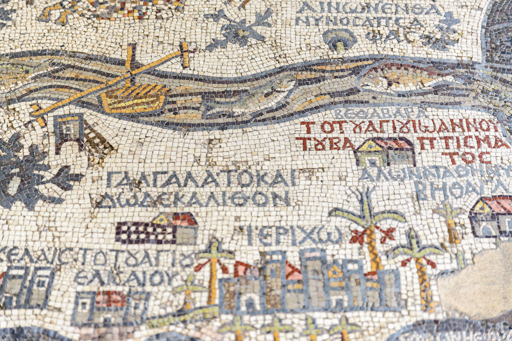
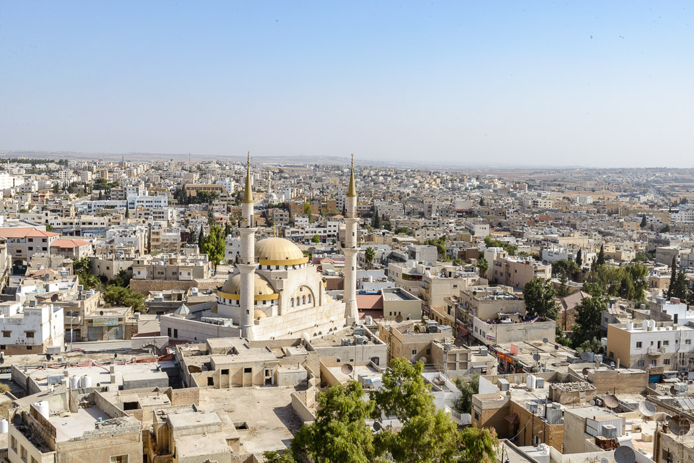
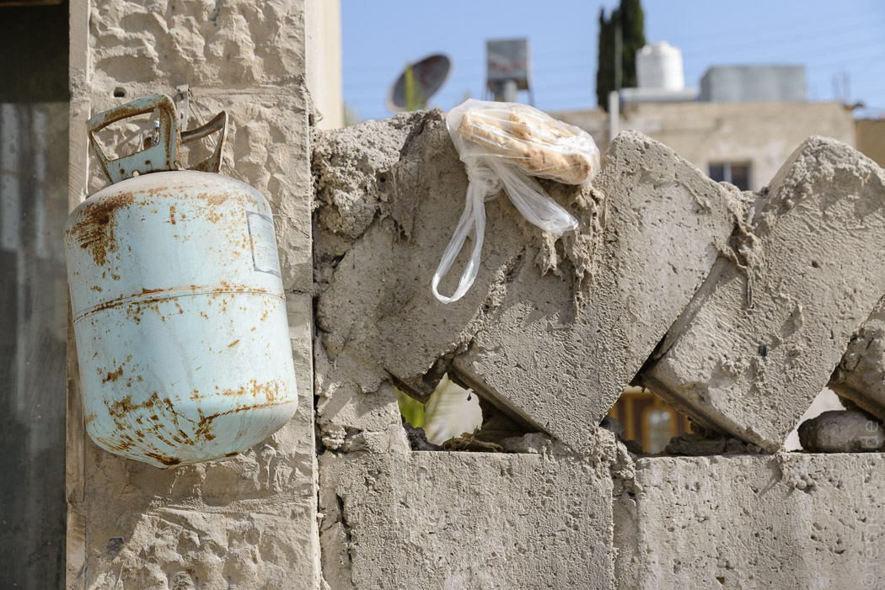
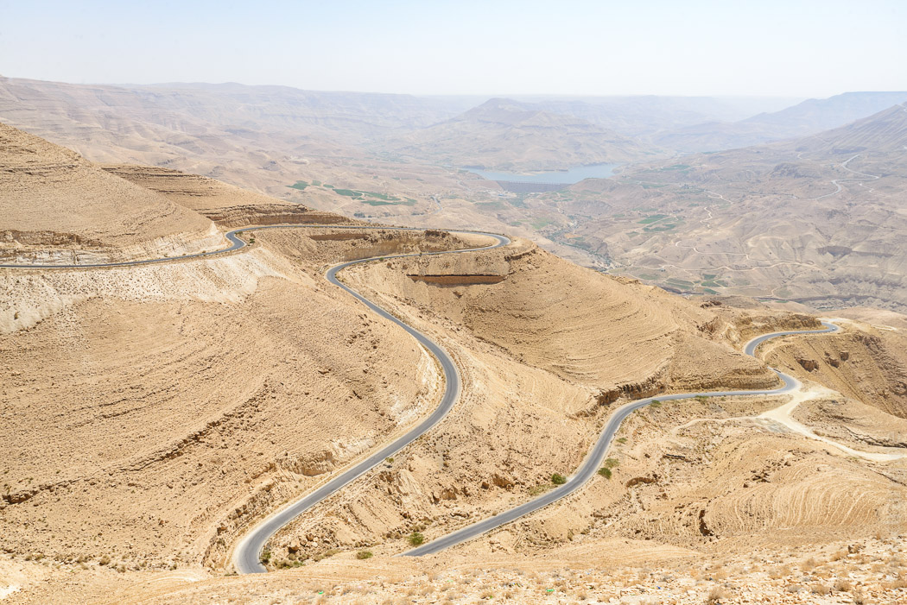
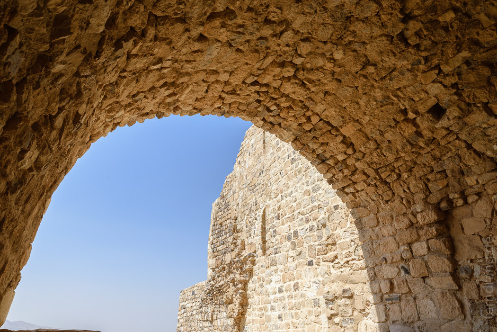
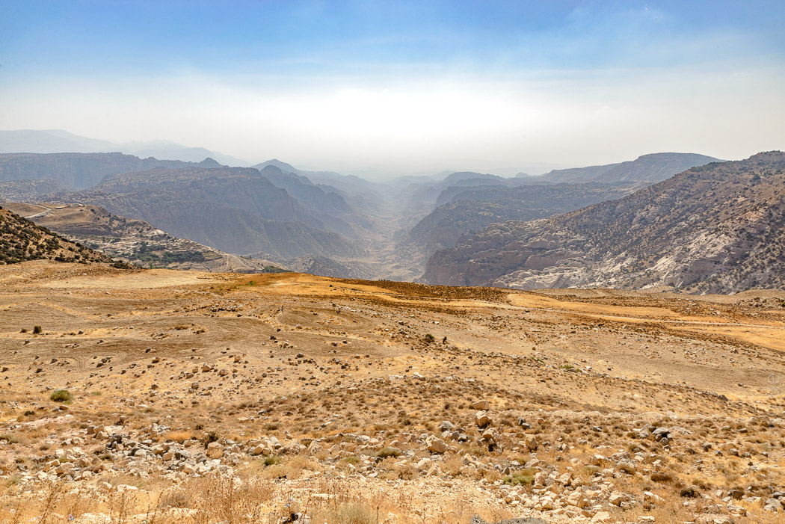
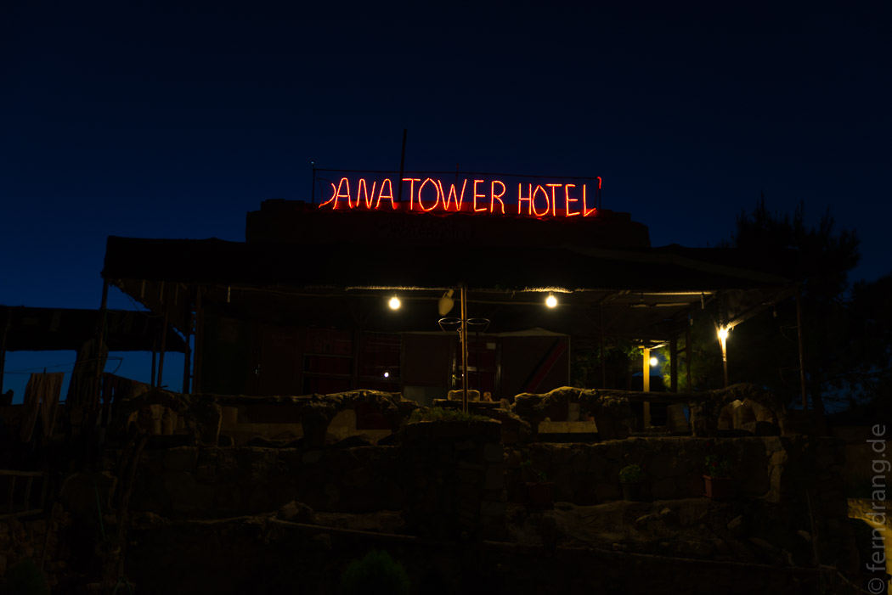

22/09/2016
Von Madaba bis Dana
Madaba ist berühmt für seine alten Mosaiken, worauf schon das aus Steinchen zusammengesetzte Nichtraucher-Schild in unserem Hotel hindeutete. Hier wurden im 6. Jahrhundert viele christliche Kirchen gebaut, und ein bodenfüllendes Mosaik war wohl die Verzierung der Wahl. Heute wird dieses Kunsthandwerk hier gelehrt, was zu allerlei Kitsch in den Läden führt. Wir haben drei Kirchen und noch weitere ausgegrabene Mosaiken mit schwindender Begeisterung hinter uns gebracht. Doch die Mosaik-Karte aus dem 7. Jhd., die Palästina und Ägypten mit ihren wichtigsten Orten zeigt, ist durchaus beachtenswert.
  Damit lassen wir Madaba hinter uns und fahren weiter Richtung Süden. Der prächtig klingende King's Highway wird ständig von hinterhältigen Verkehrsberuhigungen unbrauchbar gemacht, sodass wir die hässlichen Örtchen nur langsam hinter uns lassen. Doch dann öffnet sich die Landschaft unvermittelt in ein gigantisches Tal. Das ist die andere Seite des Wadi Mujibs, dessen schmales Ende wir gestern noch besucht hatten. Im Inland erstreckt es sich über mehrere Kilometer Breite. Die Straße windet sich in endlosen steilen Kurven zu einem Staudamm, bevor wir uns im Schritttempo auf der anderen Seite wieder hoch mühen können. Die Landschaft ändert sich immer wieder, heller Sandstein löst schwarze Basaltberge ab, die sanfteren Hügeln mit leichtem Buschwerk weichen.
Etwas geschäftiger wird es in Al Karak. Die Stadt ist auf einem steilen Hügel erbaut, über dessen Ränder ins Tal übergelaufen, und wird jetzt von großen Straßen erdrosselt, die sich wie Schlingpflanzen um die Hügel winden. Der Ort ist erwähnenswert, weil hier eine brutal klotzige Kreuzritterburg steht, deren übertriebene Ausmaße schwer beeindruckend sind. Aus der Nähe verwandelt sich die furchteinflößende Festung jedoch in einen Haufen modernde Steinmauern.
Hinter Karak wagt sich die Vegetation wieder mehr in die Landschaft und besetzt ansehnliche Bereiche, die man fast grün nennen können. Und dann kommt wieder dieser Jordanien-Effekt, der einen immer wieder überrascht: Nach einer Kurve hat man plötzlich ein unglaubliches Panorama vor sich. 
In diesem Fall das zauberhafte Dana-Tal, das sich in leichten Schwüngen im Dunst der Abendsonne verliert. Hier geht es herab ins alte Örtchen Dana, dessen kleine Häuser aus grob gehauenen Steinen über dem Abhang kleben. Im einfachen aber urigen "Dana Tower Hotel" ist uns ein opulentes Abendessen serviert worden, bevor wir uns in einem der alten Gemäuer schlafen gelegt haben.
